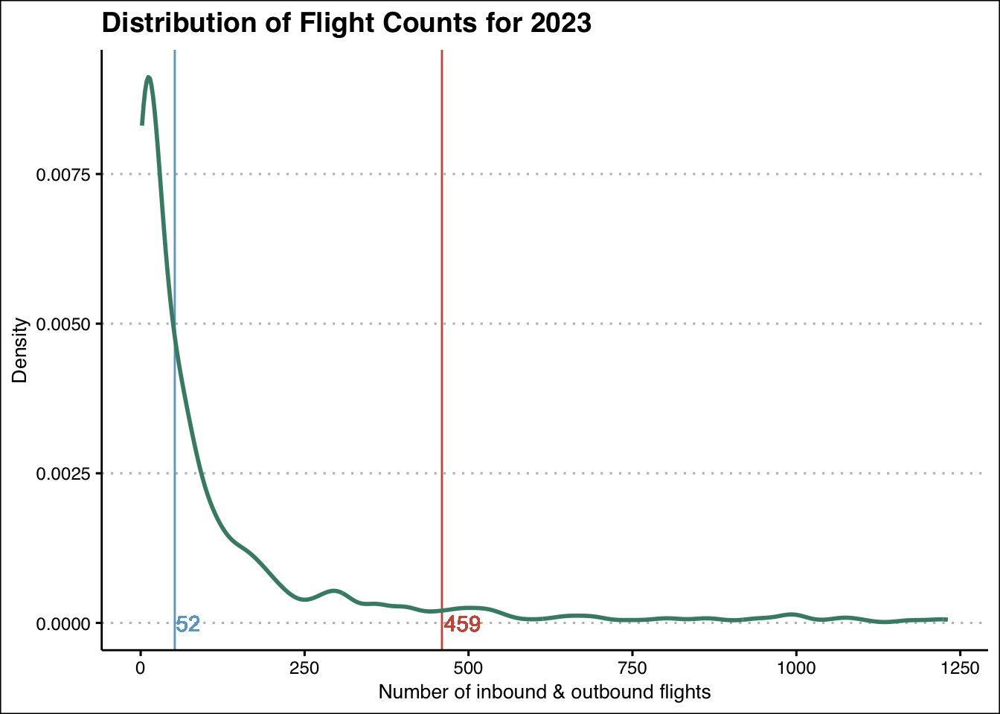
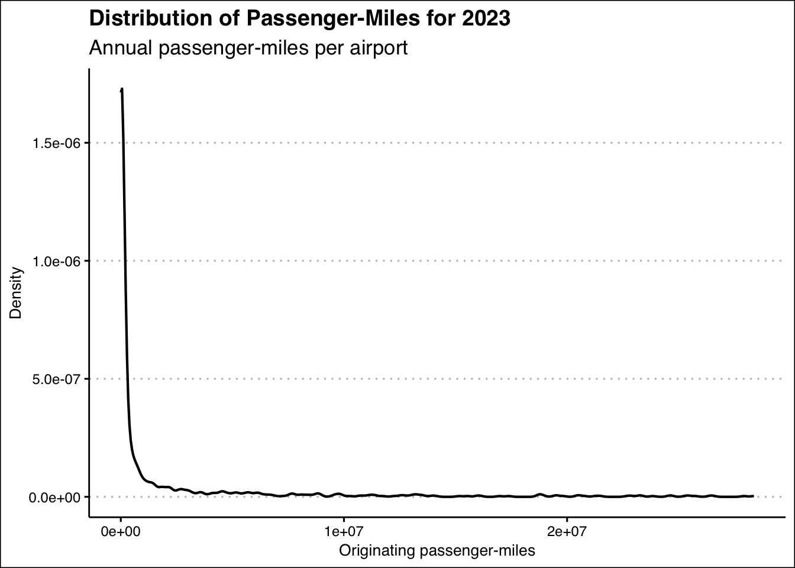
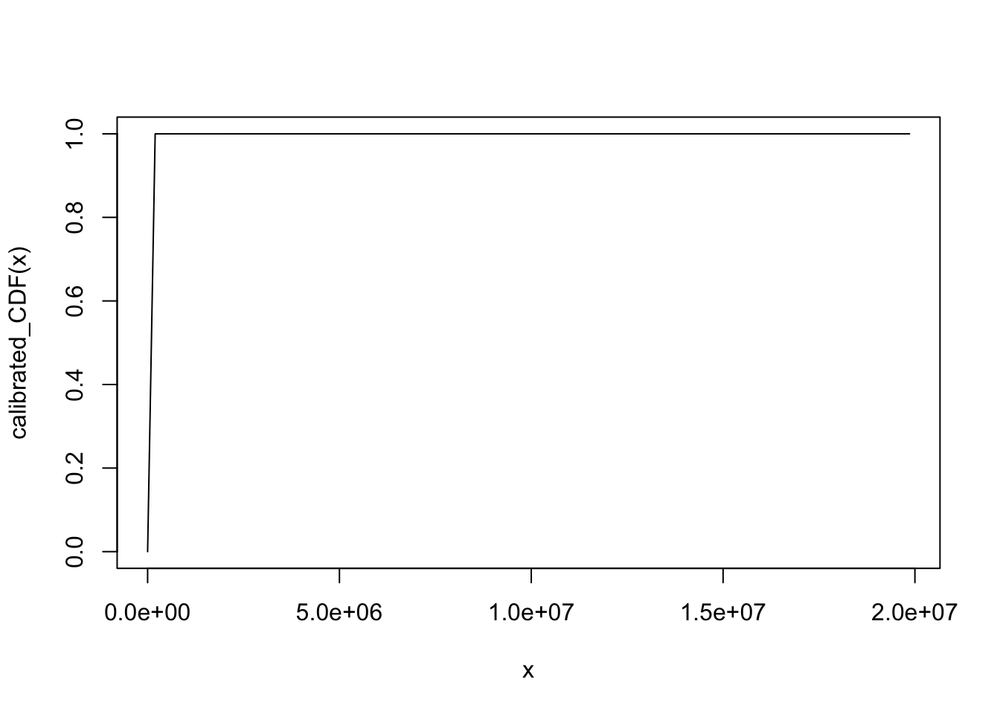
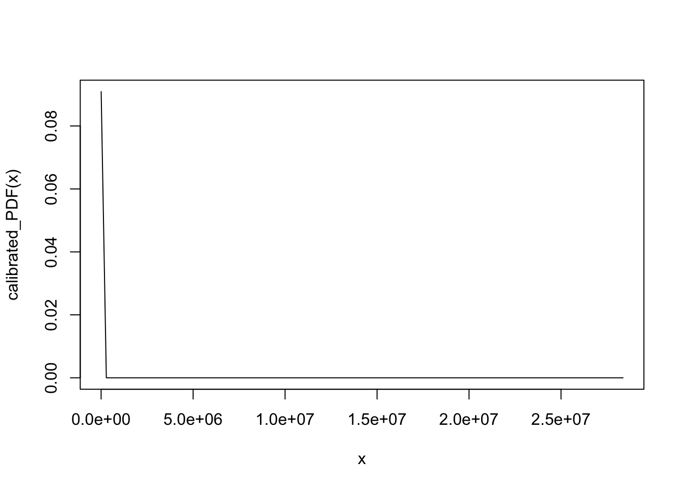
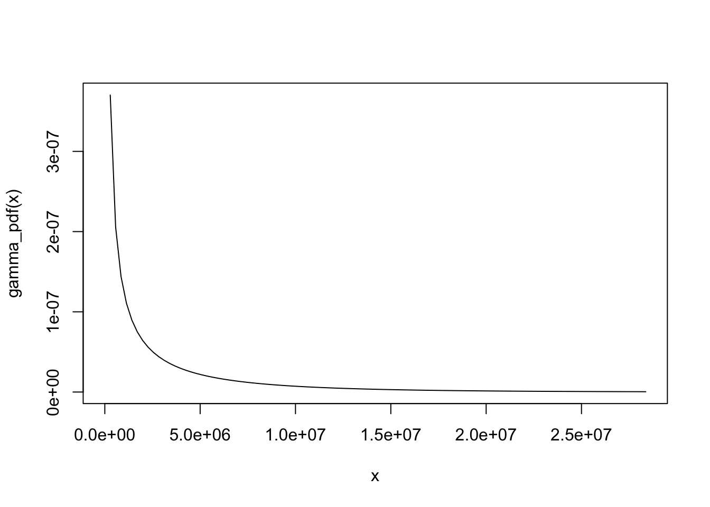
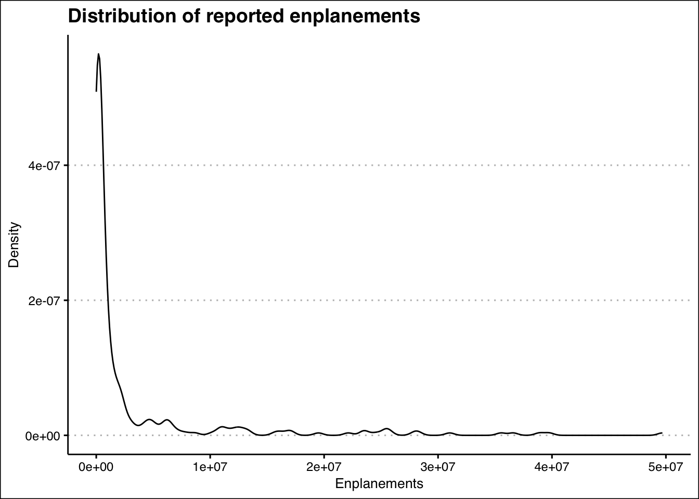

rm(list = ls())
library(tidyverse)
library(ggthemes)
df <- read_csv("../data/airports/T_T100_MARKET_ALL_CARRIER.csv") %>%
filter(DEST_COUNTRY == "US" | ORIGIN_COUNTRY == "US") %>%
mutate(domestic = ifelse(DEST_COUNTRY=="US" & ORIGIN_COUNTRY=="US", 1, 0))Calibrate Airport Size
The purpose of this notebook is to find reasonable parameter settings to model airport size.
Airport size could theoretically be modeled several ways. The key idea in the model is that an airport’s size should be related to its maximum capacity for flight. This might be considered as:
Count of departing flights in a period
Count of inbound and outbound flights in a period
Count of enplanements in a period
Count of inbound and outbound passengers in a period
Sum of available seat-miles over a period of time
Sum of passenger-miles over a period of time : \(\text{flight distance}\times \text{passengers on flight}\)
The last two methods may have the advantage of being multidimensional because it can not only account for flights and passengers combined, which may say something about the size of aircraft. Available seat-miles might best represent capacity. Unfortunately, the focus on passengers excludes cargo flights, and this may be significant category that should be incorporated.
The operating theory in the model is that as hydrogen-powered flight becomes more prominent, adoption of hydrogen infrastructure can help airports make the most of their capacity as the potential hydrogen-based passenger miles increases in the amount of hydrogen flight demanded by airlines and the number of other connecting airports with hydrogen infrastructure (the proportion of airports adopting hydrogen).
Data Sources
Existing data on passengers, flights, revenue passenger-miles, and available seat-miles are available over time through BTS. A somewhat detailed view of each airport is available individually in their Data Elements view, but it appears that the data must be downloaded individually for each airport. This would require a significant investment of time to download, organize, process, and combine. https://www.transtats.bts.gov/Data_Elements.aspx?Qn6n=I.
T-100 Market Data
Alternatively, we can calculate some of these measures ourselves using the T-100 market data also provided by the BTS. [https://www.transtats.bts.gov/Fields.asp?gnoyr_VQ=FMF]. Data from transtat system at the Bureau of Transportation Statistics (BTS) at the Department of Transportation. Contains information about flights between most all destinations (domestic and international). Distance and number of passengers is included allowing the computation of revenue passenger miles (T_T100_MARKET_ALL_CARRIER.csv).
We can also use a lookup table of airport ID and name codes along with what country the airport is in so we can filter out non-us airports. The data also comes from BTS DOT TransStat system (T_MASTER_CORD.csv).
Below we read in the data and ensure any purely international flights are removed, by keeping only flights where the origin or destination airports are in the United States. Furthermore, we will create a new column names domestic which indicates a flight where both the origin and destination airports are located in the US.
We read in the airport identifying data and filter for US airports and creating a list of distinct airport ID and airport name (three letter code). It appears that airport ID should be unique and persistent over time, while the letter code name of an airport can change over time and is not guaranteed to be unique.
# Load airport code support table
aircode = read_csv("../data/airports/T_MASTER_CORD.csv")
airport_names = aircode %>%
filter(AIRPORT_COUNTRY_CODE_ISO == "US") %>%
select(AIRPORT_ID, AIRPORT) %>%
distinct()
#aircode = aircode %>% select(AIRPORT_ID, AIRPORT_COUNTRY_CODE_ISO)Flight Counts
As described earlier, one potential measure of airport size is the quantity of flights (inbound, outbound, or both). We proceed by counting the number of flights for which each airport is the origin, and for which each airport is the destination, and then combine the data to achieve a flight count data set.
# Count the flights for each origin airport
orig_flight_counts = df %>%
filter(DISTANCE > 0) %>%
group_by(ORIGIN_AIRPORT_ID) %>%
summarize(orig_flight_count = n())
# Count the flights for each destination airport
dest_flight_counts = df %>%
filter(DISTANCE > 0) %>%
group_by(DEST_AIRPORT_ID) %>%
summarize(dest_flight_count = n())
# Combine the origin and flight count datasets
# merge in the airport name and country information
# and filter out non US airports (if any).
orig_flight_counts %>%
inner_join(dest_flight_counts, by = join_by(ORIGIN_AIRPORT_ID == DEST_AIRPORT_ID)) %>%
mutate(flight_count = orig_flight_count + dest_flight_count) %>%
rename('airport_id' = 'ORIGIN_AIRPORT_ID') %>%
left_join(aircode, by = join_by(airport_id == AIRPORT_ID)) %>%
filter(AIRPORT_COUNTRY_CODE_ISO == "US") -> airport_flight_counts
# Remove any duplicated rows
airport_flight_counts = airport_flight_counts[!duplicated(airport_flight_counts), ]
# Reduce the flight count dataframe to only
# the airport ID and the count of total flights
# both inbound and outbound. Keep only distinct
# combinations.
airport_flight_counts = airport_flight_counts %>%
select(airport_id, flight_count) %>%
distinct()The flight count data is heavily skewed and visual inspection is difficult to decipher. Below we look at a quick descriptive summary of the flight count distribution and compute a proportional measure of the 3rd quartile for visualization purposes.
q3_count = quantile(airport_flight_counts$flight_count, 0.75)*7
s_flight_count = summary(airport_flight_counts$flight_count)
print(s_flight_count) Min. 1st Qu. Median Mean 3rd Qu. Max.
2.0 9.0 52.0 459.5 180.5 16717.0 From the above description we see the extremely large gap between the smallest and largest airports. The minimum flight value of 2 flights compared to almost 17,000 flights on the high-end. The large difference in median and mean again reflects the extreme right-skew.
Below is a density plot of the distribution of flight counts for 2023 with the population filtered for flight counts less than q3_count . This eliminates the largest airports to decrease the skew and yield a better picture of the lower-end of the distribution. Removing the filter condition will show the full distribution.
ggplot(filter(airport_flight_counts, flight_count < q3_count)) +
geom_vline(xintercept = s_flight_count[[3]], color = "skyblue3") +
geom_text(aes(x = round(s_flight_count[[3]],0)*1.4,
y = 0,
label = round(s_flight_count[[3]],0)),
color = "skyblue3") +
geom_vline(xintercept = s_flight_count[[4]], color = "coral3") +
geom_text(aes(x = round(s_flight_count[[4]],0)*1.07,
y = 0,
label = round(s_flight_count[[4]],0)),
color = "coral3") +
geom_density(aes(x = flight_count, y = after_stat(density)),
color = "aquamarine4",
size = 1) +
labs(title = "Distribution of Flight Counts for 2023",
x = "Number of inbound & outbound flights",
y = "Density") +
theme_clean()
Passenger Miles
To create the distribution of passenger miles, we can follow a similar approach used for flight counts. Passenger miles will be calculated for each flight in the data as the distance (in miles) of the flight multiplied by the number of passengers aboard the flight. Passenger miles will be calculated for airports as the origin, the destination, and then combined for overall passenger miles associated with an airport.
Upon several iterations and investigation, it seemed reasonable that only considering passenger miles originating from an airport to be most relevant for provided aeronautical services and should avoid double counting.
# Compute the originating passenger-miles
# for each airport
orig_pm = df %>%
filter(DISTANCE > 0 & PASSENGERS > 0) %>%
mutate(passenger_miles = DISTANCE * PASSENGERS) %>%
group_by(ORIGIN_AIRPORT_ID) %>%
summarize(orig_pm = sum(passenger_miles))
# Compute the destination passenger-miles
# for each airport
dest_pm = df %>%
filter(DISTANCE > 0 & PASSENGERS > 0) %>%
mutate(passenger_miles = DISTANCE * PASSENGERS) %>%
group_by(DEST_AIRPORT_ID) %>%
summarize(dest_pm = sum(passenger_miles))
# Combine the origin and destination data into
# a single dataframe, and then join in airport
# name and location data to filter out any
# non-US airports. Finally select only a
# list of airport ID, character code, and originating
# passenger-miles
orig_pm %>%
inner_join(dest_pm, by = join_by(ORIGIN_AIRPORT_ID == DEST_AIRPORT_ID)) %>%
mutate(passenger_miles = orig_pm + dest_pm) %>%
rename('airport_id' = 'ORIGIN_AIRPORT_ID') %>%
left_join(aircode, by = join_by(airport_id == AIRPORT_ID)) %>%
filter(AIRPORT_COUNTRY_CODE_ISO == "US") %>%
select(airport_id, AIRPORT, orig_pm) -> airport_pm
# Remove any duplicated rows
airport_pm = airport_pm[!duplicated(airport_pm), ]
# Write the dataframe to a CSV file for later merging
write_csv(airport_pm, "../data/airports/airport_pm.csv")A quick descriptive summary of the distribution of passenger-miles is shown below, along with calculation of the 3rd quartile for visualization purposes.
s = summary(airport_pm$orig_pm)
q3 = quantile(airport_pm$orig_pm, 0.75)
format(s, scientific=FALSE) Min. 1st Qu. Median Mean 3rd Qu.
" 11" " 7652" " 224501" " 999469355" " 11651534"
Max.
"85534859450" As with flight counts, the distribution has an extremely long right-tail, a fact further borne out in the density plot. With such large outliers, it may be appropriate to remove them to investigate their impact. The code below, if ran, removes outliers using the \(1.5 \times IQR\) rule-of-thumb. Where outliers further way from central tendency then 1.5 times the interquartile range (IQR) are removed from the data.
# Remove outliers (1.5 x interquartile range)
pm_outliers <- boxplot(airport_pm$orig_pm, plot = FALSE)$out
airport_pm <- airport_pm[-which(airport_pm$orig_pm %in% pm_outliers), ]ggplot(airport_pm) +
geom_density(aes(x = orig_pm, y = after_stat(density)),
color = "black", size = 0.75) +
labs(title = "Distribution of Passenger-Miles for 2023",
subtitle = "Annual passenger-miles per airport",
x = "Originating passenger-miles",
y = "Density") +
theme_clean()
The density pattern above is quite consistent with flight counts. While difficult to see in the plot, the mode of the density curve is not actually at zero or even the minimum value. However, the mode is close to the minimum value and a number of different known probability distributions might be used to model this. A couple of reasonable candidates may be a Gamma distribution or a Pareto distribution. Though other distributions that can handle the long (possibly fat) tail optimally could be considered.
The Pareto distribution has the advantage of setting the minimum value above zero and being quite simple, but comes at the cost of forcing the mode to be equal to the minimum. This may be a reasonable approximation in this case, however.
The Gamma distribution has the advantage of not forcing the mode to equal the minimum and can incorporate a broader range of distribution shapes. Quick estimation of the distribution parameters using approximate maximum likelihood and also method-of-moments techniques yield a shape parameter suggesting a mode of zero. While this doesn’t match the sample data precisely, it may not ultimately be a terrible approximation, more research is needed here.
The general empirical moments form the sample are printed below. Remember to check if outliers have been removed from the sample when using these numbers.
# First two sample moments about the mean.
pm_min = min(airport_pm$orig_pm)
pm_max = round(max(airport_pm$orig_pm), 2)
pm_mean = round(mean(airport_pm$orig_pm), 2)
pm_sd = round(sd(airport_pm$orig_pm), 2)
print(paste("The min is: ", format(pm_min, nsmall=2, big.mark=",")))[1] "The min is: 11.00"print(paste("The max is : ", format(pm_max, nsmall=2, big.mark=",")))[1] "The max is : 28,370,758.00"print(paste("The mean is: ", format(pm_mean, nsmall=2, big.mark=",")))[1] "The mean is: 1,783,930.78"print(paste("The std dev: ", format(pm_sd, nsmall=2, big.mark=",")))[1] "The std dev: 4,522,865.74"The next few code blocks create and test out some (too) simple calibrations of the Pareto distribution.
pareto_PDF <- function(x, x_m = 2, a = 6){
return((a*x_m^a)/(x^(a+1)))
}
pareto_CDF <- function(x, x_m = 2, a = 6){
return(1 - (x_m/x)^a)
}calibrated_PDF <- function(x) {
return(pareto_PDF(x, pm_min, pm_mean/(pm_mean - pm_min)))
}
calibrated_CDF <- function(x) {
return(pareto_CDF(x, pm_min, pm_mean/(pm_mean-pm_min)))
}
curve(calibrated_CDF, from = pm_min, to = pm_max*0.7)
curve(calibrated_PDF, from = pm_min, to = pm_max)
Due to the extreme degree of skew, the full shape of the distribution/density is hard to recognize without limiting the support.
Gamma Distribution Fit
The Gamma distribution has some additional flexibility and we can use the sample moments to estimate the population parameters and moments. We can try out three relatively simple methods. The first two are more statistically typical, while the third is intended to get a density plot that is on scale with the data while also mimicking its shape at lower values (i.e., a nonzero mode not equal to the mean).
- Maximum Likelihood
- Method of Moments
- Mean & Mode System
Maximum Likelihood on the Gamma distribution doesn’t have closed form solutions for the two primary parameters \((k, \theta)\), but some consistent closed form estimators for the generalized gamma distribution could be a reasonable approximation.
\[ \hat{\theta}_{ml} = N^{-1}\sum_{i=1}^{N} x_i \ln(x_i) - \left(N^{-1}\sum_{i=1}^{N} x_i\right) \cdot \left( N^{-1}\sum_{i=1}^{N} \ln(x_i) \right) \]
The ML estimator is biased but can be mostly corrected by scaling it by \(N/(N-1)\). The shape parameter \(k\) is then estimated with the approximations \(\hat{k}_{ml} = \bar{x} / \hat{\theta}_{ml}\) but the bias-correction is recommended as below.
\[ \hat{k}_{ml}^{*} = \hat{k}_{ml} - \frac{1}{N}\left(3 \hat{k}_{ml} - \frac{2}{3}\cdot \frac{\hat{k}_{ml}}{1 + \hat{k}_{ml}} - \frac{4}{5} \frac{\hat{k}_{ml}}{(1 + \hat{k}_{ml})^2} \right) \]
Method of Moments on the Gamma distribution has more closed form expressions and when performed using the first to moments about the mean yields estimators:
\[ \begin{align} \hat{\alpha}_{mom} &= \frac{\bar{x}^2}{N^{-1}(\sum_{i=1}^{N} x_i - \bar{x})^2} \\ \hat{k}_{mom} &= \hat{\alpha}_{mom} \\ \hat{\beta}_{mom} &= \frac{\bar{x}}{N^{-1}(\sum_{i=1}^{N} x_i - \bar{x})^2} \\ \hat{\theta}_{mom} &= \frac{1}{\hat{\beta}_{mom}} \end{align} \]
The estimates of \(\hat{\theta}_{mom}\) and \(\hat{k}_{mom}\) can be used as the scale and shape parameters, respectively.
Mean & Mode System of Equations
This is more of a “fitting” than an estimation, but using the expressions for the mean and mode of the gamma distribution and assigning them equal to the empirical values from the sample we can solve the system of equations to arrive at \(k\) and \(\theta\) values that yield a scale and shape roughly similar to the data, if we prioritize the shape having a mode greater than the minimum value. Letting \(\bar{x}\) and \(x_m\) be the sample mean and mode respectively we have
\[ \begin{align} k\theta &= \bar{x} \\ (k - 1)\theta &= x_{m}, \;\; k > 1 \end{align} \]
Solving the simultaneous system for \((k,\theta)\) yields
\[ \begin{align} \hat{k}_{mm} &= \frac{\bar{x}}{\bar{x} - x_m} \\ \hat{\theta}_{mm} &= \bar{x} - x_m \end{align} \]
The estimates for each approach are computed in the code block below.
airport_pm %>%
mutate(lnx = log(orig_pm)) %>%
mutate(xlnx = orig_pm * lnx) -> pm_gam
bar_x <- mean(pm_gam$orig_pm)
bar_lnx <- mean(pm_gam$lnx)
bar_xlnx <- mean(pm_gam$xlnx)
v_x <- mean((pm_gam$orig_pm - bar_x)^2)
N <- nrow(pm_gam)
# Maximum likelihood *like* consistent closed form estimators
# derived from likelihood of the generalized gamma distribution
ml_theta_hat <- bar_xlnx - bar_x * bar_lnx
ml_theta_hat <- (N / (N - 1)) * ml_theta_hat
ml_k_hat <- bar_x / ml_theta_hat
ml_k_hat <- ml_k_hat - (1/N)*(3*ml_k_hat - (2/3)*(ml_k_hat/(1+ml_k_hat)) - (4/5)*(ml_k_hat/(1+ml_k_hat)^2))
ml_mode_hat <- (ml_k_hat - 1) * ml_theta_hat
# Method of moments estimation of gamma distribution
mom_alpha_hat <- (bar_x)^2 / v_x
mom_k_hat <- mom_alpha_hat
mom_beta_hat <- (bar_x) / v_x
mom_theta_hat <- 1 / mom_beta_hat
mom_mode_hat <- (mom_k_hat - 1) * mom_theta_hat
# Mean and Mode Calibration
d <- density(airport_pm$orig_pm)
mm_mode <- d$x[d$y == max(d$y)]
mm_k_hat <- bar_x / (bar_x - mm_mode)
mm_theta_hat <- bar_x - mm_modeFor each of the three approaches, the relevant parameter estimates are printed out along with some of the implied distribution properties.
print("MAXIMUM LIKELIHOOD")[1] "MAXIMUM LIKELIHOOD"print(paste("Theta :", format(ml_theta_hat, nsmall=2, big.mark=",")))[1] "Theta : 9,037,721.92"print(paste("k :", format(ml_k_hat)))[1] "k : 0.1969823"print("------ IMPLIED PROPERTIES --------")[1] "------ IMPLIED PROPERTIES --------"print(paste("Mean:", format(ml_k_hat * ml_theta_hat, nsmall=2, big.mark=",")))[1] "Mean: 1,780,271.20"print(paste("StDev:", format(sqrt(ml_k_hat * (ml_theta_hat)^2), nsmall=2, big.mark=",")))[1] "StDev: 4,011,183.87"print(paste("Mode:", format(ifelse(ml_k_hat>=1,(ml_k_hat-1)*ml_theta_hat, 0), nsmall=2, big.mark=",")))[1] "Mode: 0.00"print("METHOD OF MOMENTS")[1] "METHOD OF MOMENTS"print(paste("Theta :", format(mom_theta_hat, nsmall=2, big.mark=",")))[1] "Theta : 11,454,511.24"print(paste("k :", format(mom_k_hat)))[1] "k : 0.1557405"print("------ IMPLIED PROPERTIES --------")[1] "------ IMPLIED PROPERTIES --------"print(paste("Mean:", format(mom_k_hat * mom_theta_hat, nsmall=2, big.mark=",")))[1] "Mean: 1,783,930.78"print(paste("StDev:", format(sqrt(mom_k_hat * (mom_theta_hat)^2), nsmall=2, big.mark=",")))[1] "StDev: 4,520,404.32"print(paste("Mode:", format(ifelse(mom_k_hat>=1,(mom_k_hat-1)*mom_theta_hat, 0), nsmall=2, big.mark=",")))[1] "Mode: 0.00"print("MEAN & MODE FIX")[1] "MEAN & MODE FIX"print(paste("Theta :", format(mm_theta_hat, nsmall=2, big.mark=",")))[1] "Theta : 1,727,595.34"print(paste("k :", format(mm_k_hat)))[1] "k : 1.032609"print("------ IMPLIED PROPERTIES --------")[1] "------ IMPLIED PROPERTIES --------"print(paste("Mean:", format(mm_k_hat * mm_theta_hat, nsmall=2, big.mark=",")))[1] "Mean: 1,783,930.78"print(paste("StDev:", format(sqrt(mm_k_hat * (mm_theta_hat)^2), nsmall=2, big.mark=",")))[1] "StDev: 1,755,537.10"print(paste("Mode:", format(ifelse(mm_k_hat>=1,(mm_k_hat-1)*mm_theta_hat, 0), nsmall=2, big.mark=",")))[1] "Mode: 56,335.44"From the above print outs, we see that the means are pretty comparable across all methods. The spread, as measured by standard deviation, is similar for maximum likelihood and method of moments which makes sense given the actual estimation. The mean and mode method has a very different spread, which could affect results, but it is the only one of the three approaches that yields a positive mode (since \(\hat{k}_mm > 1\).
Using the mean and mode approach we can calibrate the gamma PDF and CDF as shown below.
gamma_pdf <- function(x) {
dgamma(x, shape = ml_k_hat, scale = ml_theta_hat)
}
gamma_cdf <- function(x) {
pgamma(x, shape = mm_k_hat, scale = mm_theta_hat)
}
curve(gamma_pdf, from=0, to=pm_max)
Enplanements
Another way to measure the size of an airport may be “enplanements” which I think means how many people it got onto planes. This data is contained in some airport financials and I will look at it here based on a smaller sample of airports to see what distribution seems to make sense. While enplanements are good for measuring a single airport’s size, its not as easily calculated from flight data and flight miles or revenue passenger-miles. Additionally, this particular data set comes from voluntarily self-reported data. Consequently, data is too frequently missing and it’s accuracy may not always be accurate.
fin = read_csv("../data/airports/airport_financials.csv")How many unique airport codes are listed with positive enplanement numbers?
fin %>%
filter(Enplanements > 0) %>%
select(Enplanements) %>%
dim()[1] 281 1Apparently, there are only 281 airports reporting positive enplanements. I will assume that any zero values for enplanements are mistakes, or indicative of missing data.
ggplot(filter(fin, Enplanements > 0)) +
geom_density(aes(x = Enplanements)) +
labs(title = "Distribution of reported enplanements",
x = "Enplanements",
y = "Density") +
theme_clean()